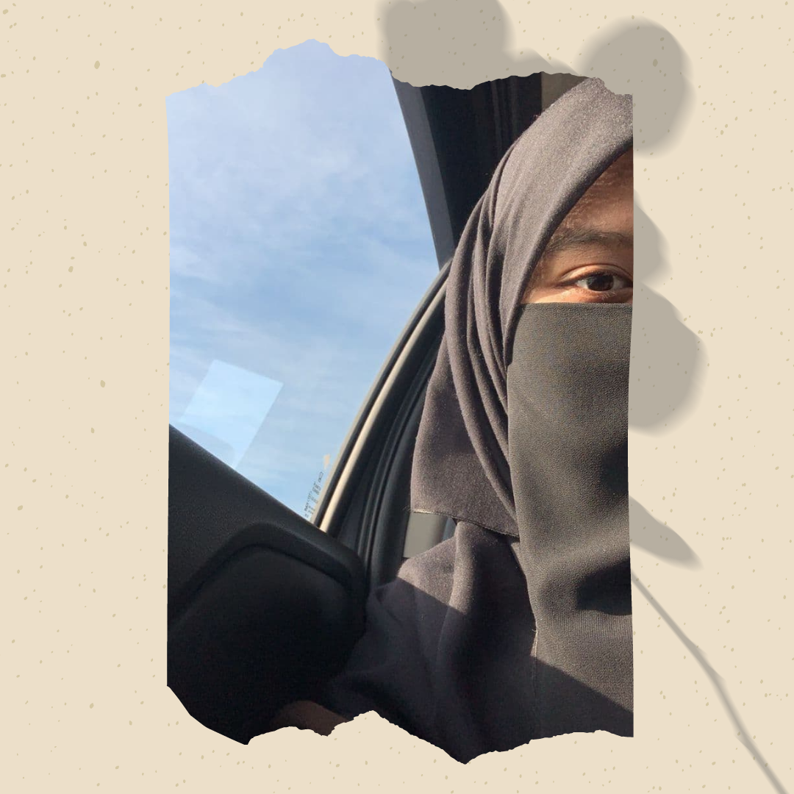

| This is my family! They holds a special place in my life. I love my family and I can do anything for my family members. They have given me so much love and affection and have made me who I am today. Also, I love my family more than anyone in this world. Their happiness means a lot to me and I can do anything to keep them all happy. |
|
| This is my dad and my mom. Both of them are 48 years old. My dad was born in Kelantan and my mom was born in Terengganu. My dad is an enforcer and my mom is a teacher. I love both of them so much! |
| This is me. My birthday is on 21st September 2001. Currently, I study at UiTM Kedah in Diploma of Information Management. I am now in semester 5 and can't wait to graduate soon! |
|  | This is my sister. She is 18 years old and currently continues her study at Matriculation Perak. Sometimes, she is very bubbly and so annoying to me but I love my sister no matter what. She is really good at cooking and I really love her dishes. Also, she is really good at cooking and I really love her dishes. I really enjoyed our moments together when we play, sing and laugh together. |
| Lastly, here is my younger brother and one and he is the only guy in my siblings. I always called him "Haqim" or "Amirul". He is 14 years old. He is sweet, cute, naughty, irritating, short-tempered, yet he is my little brother who would stand with me, even when the entire world would be against me. I love you, lil bro! |